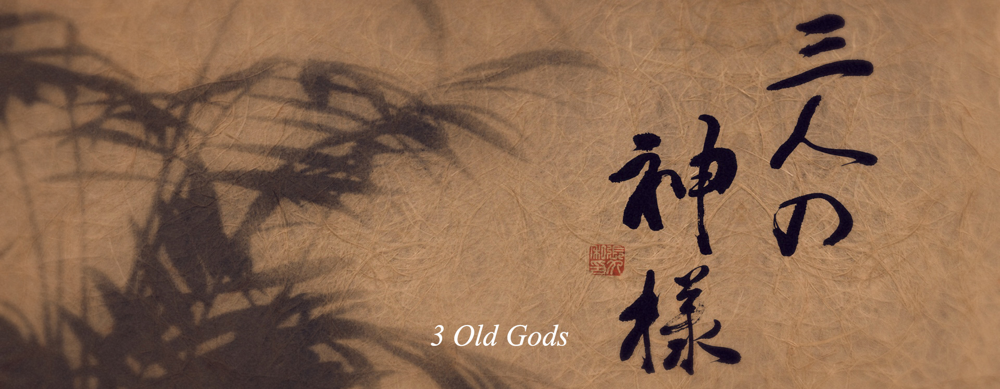
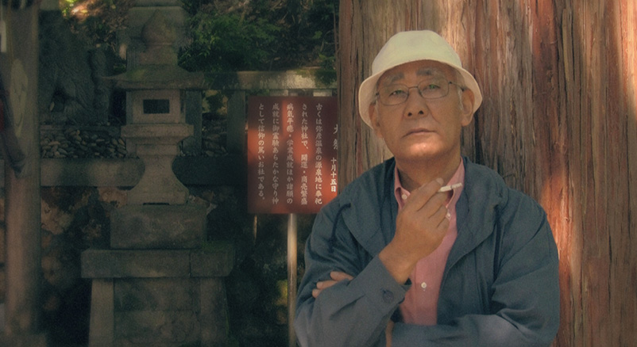
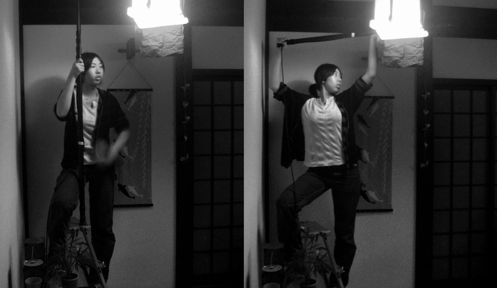
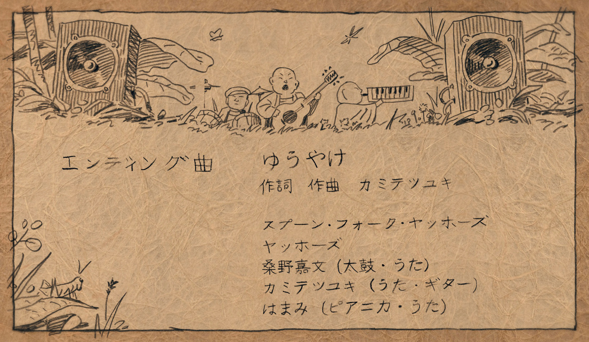

 Atelier Sentô
Atelier Sentô





Making of
Les 3 dieux a été réalisé sans aucun budget grâce à l'aide généreuse des étudiants bénévoles de l'école I-media et aux acteurs bénévoles.


{kind=link}
{kind=link}
{kind=link}
{kind=link}
{kind=link}
{kind=link}

Musique originale composée par Giannis Milonogiannis
SLOW ROCK
La musique du film "Les 3 dieux" est tirée de l'album "Slow Rock", composée par l'artiste grec Giannis Milonogiannis. Écouter l'album complet sir la page Bandcamp de l'artiste : https://returningasechoes.bandcamp.com/album/slow-rock Les morceaux que l'on peut entenddre dans le film:
Générique de fin composé par Yoo-hoos
Yûyake
La musique du générique de fin, "Yûyake" (ゆうやけ), a été composée par le groupe japonais d'Osaka "Yoo-hoo" (ヤッホーズ). Elle est issue de l'album "Spoon.Fork" (スプーン.フォーク) disponible sur le site officiel du groupe: http://music.geocities.jp/yoo_hoos_space/cd.html Découvrez le Soundcloud et d'autres chansons du groupe: https://soundcloud.com/yahhoz

CREDITS
Réalisation Atelier Sentô Scénario: Josh Tierney Accteurs Kosuke Baba – Le premier viel homme Wataru Tsumoto – Le deuxième vieil homme Yasuo Gondaira – Le troisième vieil homme Hisako Aida – La serveuse Masayuki Tsuchida – Le salaryman Miwa Neishi – La jeune fille Naoto Nagino – Le jeune homme L'équipe d' I-media college Prise de son: Kentaro Inamura Micro: Risa Uemura Eclairage: Kazuma Miyano Assistant directeur: Fumiya Hazama Hironori Takahara Motoharu Honda Naoto Torigoe Kenji Sekiya Calligraphie : Yasuhiro Tabuchi Lieux de tournage Le village Yahiko, le temple Yu, l'échoppe du mont Yahiko , salon de thé Yorozu an, la ville de Niigata, la gare d'Uchino, Niigata Remerciements Tao Nashimoto, I-media College, Chloé Viatte, Tatsuo Henmi, Martine Tsumoto, Mae Kobayashi, Chizuko Kobayashi, Sumie Bana, Suguru Tanaka, Laurie Placin, Benoit Loridant, Ken Tsumoto